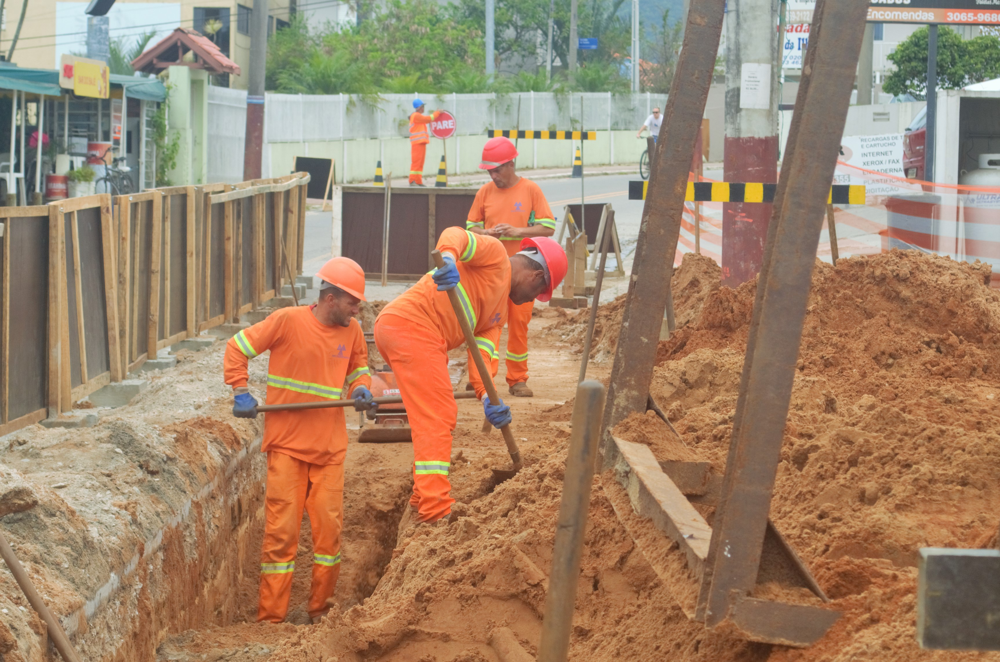
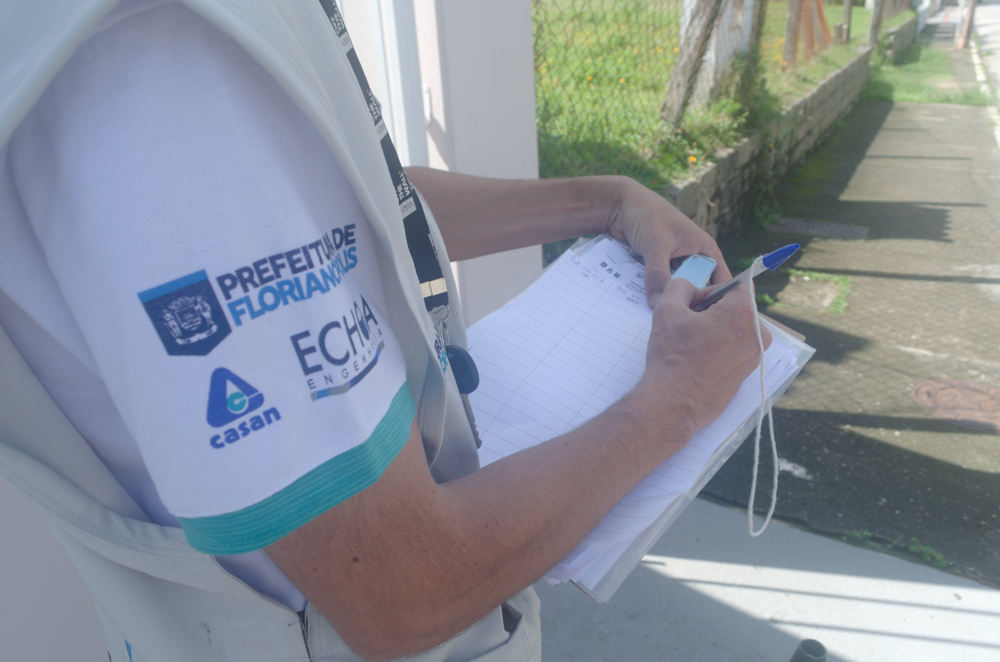

Quem é responsável pelo esgoto?
-

Para a ampliação de coleta e tratamento de esgoto em Florianópolis, foram destinados, desde 2015, R$ 417,1 milhões para obras
-

Drenagem urbana se mistura com água da chuva em Florianópolis
-

Prefeitura de Florianópolis e Casan constróem o sistema de coleta de efluentes no bairro Ingleses
A obrigação de oferecer saneamento básico para a população é, por lei nacional, dos municípios. Coleta de lixo, tratamento de esgoto, drenagem urbana e abastecimento de água são os quatro serviços que as prefeituras brasileiras devem garantir para melhorar índices de saúde pública e proteção do meio ambiente no país. Mas, na prática, a gestão e implementação da coleta e tratamento de esgoto de uma cidade envolve uma série de responsáveis.
Em Florianópolis, as operações de coleta e tratamento de efluentes são feitas por meio de uma empresa de caráter público-privada: a Companhia Catarinense de Água e Saneamento (Casan). A Prefeitura Municipal tem a tarefa de planejar, licitar obras e fiscalizar a atuação da Casan, que opera a rede de esgoto. Hoje, a cidade possui 62,7% de cobertura no setor, enquanto a média nacional é de 50,3%, de acordo com o Trata Brasil.
Ainda que a capital tenha uma presença de saneamento maior do que a maior parte das cidade, ela sofre com uma série de problemas em relação ao esgoto. “Isso acontece porque existem falhas, das pequenas às grandes, de todos os responsáveis pelo serviço. Afinal, saneamento básico é um tema complexo e depende que cada um esteja desempenhando com qualidade seu papel”, explica Pablo Sezerino, professor do curso de Engenharia Ambiental da Universidade Federal de Santa Catarina (UFSC) e membro do Conselho Municipal de Saneamento Básico de Florianópolis.
Além da prefeitura e da Casan, o município possui um outro responsável pelo destino do esgoto: os residentes e proprietários de construções. De acordo com a Política Nacional de Saneamento Básico, é dever dos munícipes realizarem a ligação de suas residências aos locais onde existe rede. Onde não há cobertura, é obrigação de quem gera o esgoto, seja proprietário ou locatário da residência, fazer com que seus efluentes se encaminhem para uma solução individual de coleta, como é a fossa séptica.
Quatro outras instituições têm o papel de regular e fiscalizar o saneamento básico do município. A Agência Reguladora de Serviços Públicos de Santa Catarina (ARESC) é responsável por estabelecer padrões e normas para o serviço em todo o estado e garantir que as metas sejam cumpridas. Na fiscalização ambiental, a atuação é da Fundação Municipal do Meio Ambiente (FLORAM), Instituto do Meio Ambiente (antiga FATMA) e Vigilância Sanitária de Florianópolis.
Por meio do Conselho Municipal de Saneamento Básico de Florianópolis acontece a participação da sociedade nas discussões sobre o tema. Dele fazem parte organizações da sociedade civil, poder público e iniciativa privada para debater as necessidades e prioridades no esgotamento sanitário do município. “Apesar de existir o conselho, ele funciona apenas em caráter consultivo, não deliberativo. Muitas boas intenções são colocadas ali, mas não considero como uma verdadeira participação popular”, opina Alencar Vigano, presidente da Associação de Moradores do Campeche (AMOCAM).

Investimentos e desafios
"O crescimento de Florianópolis não foi acompanhado, durante muitos anos, pela ampliação de acesso a esgotamento sanitário. Mas agora tem muita coisa se tornando realidade”, afirma Pablo Sezerino, professor representante da Universidade Federal de Santa Catarina no Conselho Municipal de Saneamento Básico. De acordo com a Casan, o investimento no setor foi acelerado e cresceu 61,1% nos últimos cinco anos. Em 2017, quase R$ 150 milhões foram investidos em obras de esgotamento sanitário em Santa Catarina.
Para a ampliação de coleta e tratamento de esgoto em Florianópolis, foram destinados, desde 2015, R$ 417,1 milhões para obras — parte de um pacote com previsão de finalização em 2020. As fontes dos recursos são, majoritariamente, a Caixa Econômica Federal e a Agência de Cooperação Internacional do Japão (JICA). “Em 2020, teremos todas as áreas mais urbanizadas de Florianópolis com o serviço [coleta e tratamento de esgoto], chegando a 74% de cobertura. A previsão da universalização [100% de abrangência], é 2032”, acredita Lucas Arruda, Superintendente de Habitação e Saneamento da Prefeitura de Florianópolis.
A Casan teve, em 2017, cerca de R$ 1 bilhão em receita e R$ 99,7 milhões em lucro líquido, de acordo com nota publicada no Diário Oficial do Estado de Santa Catarina em abril deste ano. O resultado foi o melhor desempenho financeiro de sua história.

De acordo com Francisco Pimentel, chefe de operações da rede de esgoto de Florianópolis, a cidade recebeu possibilidades de captação de verbas nos últimos anos, principalmente através da JICA. No entanto, Florianópolis necessita de “investimentos maiores”, uma vez que a sua geografia demanda sistemas mais complexos de construção. “As estruturas de esgoto, que funcionam por gravidade, devido aos relevos da ilha, precisam de estações que os bombeiem mecanicamente — o que é gasto de construção e de energia”, explica.
Para o engenheiro, o maior desafio que Florianópolis vive no setor também está relacionado ao fato de ser uma ilha. Atualmente, cerca de 90% da cidade recebe água encanada de rios que estão no continente. “Toda água consumida se torna esgoto. Dentro de Florianópolis não há rios onde possamos depositar o esgoto após tratado, necessitando a construção de obras que depositem esse material no meio do oceano”, explica Pimentel. Por lei, existe um limite de esgoto tratado que pode ser enviado para o corpo d’água de um rio. A Casan tem projetos para implementar obras de emissão oceânica nos bairros Campeche e Ingleses.
O excesso de esgoto produzido é um problema que se acentua nos verões, onde a ilha recebe um expressivo número de visitantes. Na temporada de 2016, 1,9 milhão de turistas estiveram em Florianópolis, de acordo com a Secretaria Municipal de Turismo.
Para Priscila Valler, gerente em saúde ambiental da Vigilância Sanitária de Florianópolis, o grande desafio do município está na fiscalização dos locais que possuem rede de saneamento e na pouca atenção às soluções individuais. De acordo com o Plano Municipal de Saneamento Básico, o serviço de esgoto da Casan “(…) tem se desenvolvido sem uma fiscalização adequada pela Prefeitura Municipal de Florianópolis.” A Vigilância Sanitária possui somente 11 fiscais para todo o território da Ilha de Santa Catarina.
A Prefeitura de Florianópolis estima que metade das edificações localizadas onde há o serviço público de coleta de esgoto estão irregulares em suas ligações ao sistema coletivo. “Estamos realizando o “Programa Floripa Se Liga na Rede”, que ensina e incentiva o cidadão a fazer uma conexão correta das suas saídas de esgoto à rede pública. Vamos passar por todos os bairros de Florianópolis”, garante Lucas Arruda, Superintendente de Habitação e Saneamento da Prefeitura de Florianópolis.

Irregulares, moradores não usam rede de esgoto
Quase metade das residências com acesso à rede de coleta e tratamento de efluentes de Florianópolis não estão conectadas ou despejam de forma errada seus esgotos no sistema. A situação foi revelada pelo Programa Floripa Se Liga na Rede, iniciativa da Prefeitura Municipal de Florianópolis para fazer com que moradores liguem-se à rede pública. No bairro Bom Abrigo, região nobre do continente do município que possui sistema de coleta de efluentes há 30 anos, 71% dos 166 imóveis vistoriados estavam com alguma irregularidade.
O procedimento de vistoria do Floripa Se Liga na Rede é simples: agentes da prefeitura marcam horários com moradores, visitam suas residências e despejam corantes de alimentos nas pias e vasos sanitários dos imóveis. Se o corante não aparece no equipamento que tem ligação com a rede de esgoto pública, significa que a construção está irregular. Os engenheiros e técnicos em saneamento, após encontrarem a matriz do problema, dão uma consultoria para o morador saber como regularizar seu imóvel.
A principal irregularidade dos imóveis é a falta de caixa de gordura e o lançamento de água da máquina de lavar roupas na rede que capta água da chuva. Apesar de parecerem pequenos detalhes, eles atrapalham a eficiência da coleta e tratamento de esgoto. “A caixa de gordura é um sistema individual que evita o entupimento dos canos de saneamento, mas geralmente as pessoas a negligenciam. Também fazem com a água de lavar roupa: acham que porque ela está “limpa”, com sabão, pode-se juntar com a água da chuva. Mas você já deixou um balde com sabão em pó parado por três dias? Ele fica com cheiro de podre”, explica Priscila Valler, gerente em saúde ambiental da Vigilância Sanitária de Florianópolis.
Para facilitar a adequação e compra de materiais para a regularização do sistema de esgoto, a Prefeitura Municipal de Florianópolis criou o Cartão de Crédito Floripa Se Liga na Rede. Com ele, cidadãos de qualquer faixa de renda podem financiar até R$ 5 mil com pagamento parcelado em 60 meses para realizar as obras necessárias de saneamento. O cartão permite a compra de materiais de construção e pagamento para profissionais, como encanadores, que estão credenciados no sistema da Casan.
A iniciativa da prefeitura não tem a função inicial de penalizar moradores que cometem irregularidades, mas de evidenciar os problemas. “Com o Floripa Se Liga Na Rede, nós queremos, antes de tudo, ter uma comunicação com os cidadãos para conscientizar. Também queremos facilitar a ligação na rede pública de esgoto com o cartão de crédito”, explica Lucas Arruda, Superintendente de Habitação e Saneamento da Prefeitura de Florianópolis. De acordo com Arruda, o programa pretende ser o propulsor para resolver um desafio para o saneamento básico de Florianópolis.
Ainda que o foco seja orientar a população, caso alguma residência ou edifício continue com irregularidades, após uma segunda inspeção da prefeitura, multas serão dadas através da FLORAM ou da Vigilância Sanitária. Em casos onde as residências já possuíam denúncias relacionadas ao despejo irregular de esgoto, a equipe do Floripa Se Liga na Rede atua em parceria com órgãos fiscalizadores, os quais têm o direito de aplicar penalizações, em um sistema de “blitz” em diversas localidades do município.
Quando acontece a blitz, ao contrário das vistorias comuns, os proprietários dos imóveis não são avisados com antecedência sobre a fiscalização. Em ação realizada na Beira-Mar Norte, descobriu-se que um prédio de 10 andares estava lançando o esgoto direto na captação de água da chuva - que não passa por tratamento e vai para os rios do município. Se o problema não fosse corrigido em 10 dias, a administradora do edifício seria multada em R$ 10,5 mil pela Floram. Após a notificação, a correção do sistema começou na mesma semana.
Em fiscalização surpresa realizada no bairro Campeche, o programa encontrou dois imóveis irregulares entre 31 vistoriados. Na região, que não possui rede coletora em operação, o trabalho focou em avaliar os sistemas individuais de tratamento. Na situação mais complicada do bairro, um residencial da Rua Nivaldo Dias foi identificado fazendo lançamento de efluentes na rede pluvial, que vai direto para o Riozinho. No caso, foi lavrado o auto de intimação pela Vigilância Sanitária, que solicitou a apresentação do Habite-se Sanitário.
“A irregularidade da população com o esgoto é um grande problema. Por regra, cada cidadão precisa se conectar à rede quando ela existe. Se ele não faz isso, torna todo investimento público e toda ação pelo saneamento algo em vão. Em locais onde só existe a solução individual, também é tarefa do cidadão criar a sua solução individual para proteger a sua própria saúde e o meio ambiente”, alerta Juliana Leonel, coordenadora do curso de oceanografia da Universidade Federal de Santa Catarina.
-

Técnicos da Prefeitura de Florianópolis reportam os resultados dos testes do Programa Floripa Se Liga na Rede
-

Agentes despejam corantes de alimentos nas pias e vasos sanitários dos imóveis, que depois devem aparecer no equipamento que tem ligação com a rede de esgoto pública
-

Prefeitura de Florianópolis e Casan constróem o sistema de coleta de efluentes no bairro Ingleses
-

Balneário do Bom Abrigo, onde 71% dos 166 imóveis vistoriados estavam com alguma irregularidade.
Decisão judicial definiu a balneabilidade de Canasvieiras
O aposentado Salvador Mendes, de 64 anos, sorri e aponta para o Rio do Braz, que passa ao lado de sua casa. “Faz mais de um ano que ele não fede mais. Até isso acontecer, foi muita luta da sociedade”, diz. A menos de cem metros da residência funciona a filtragem da Unidade de Recuperação Ambiental (URA) Rio do Braz, instalada em 2016, uma das principais causas para a atual despoluição do corpo d’água da região norte de Florianópolis.
-

A Unidade de Recuperação Ambiental (URA) despolui 700 mil litros de água diariamente no Rio do Braz
-

Para impedir que o Rio do Braz desemboque na Praia de Canavieiras, prefeitura colocou um banco de areia no trajeto
-

No final da foto, a barreira que impede que o Rio do Braz de encontrar a Praia de Canasvieiras
-

Em seu trajeto normal, o Rio do Braz desembocaria ao lado do Trapiche de Canasvieiras
O balneário de Canasvieiras, maior destino turístico dos estrangeiros que visitam a capital catarinense, foi protagonista da crise do saneamento vivida no município em 2016. Naquele verão, para evitar o cheiro que exalava do Rio do Braz, que desemboca na praia, alguns veranistas chegaram a utilizar máscaras ao caminhar na areia. No Clarín, jornal argentino de circulação nacional, o caso da poluição e falta de balneabilidade da praia de Canasvieiras se tornou manchete.
“Os turistas argentinos, que tinham reservado vaga na pousada, ligavam para perguntar se podiam tomar banho de chuveiro, se era perigoso entrar em contato com a água da pia”, conta Francisco Santana Júnior, proprietário de uma pousada na região. No mesmo ano, um surto de diarreia foi registrado pela Vigilância Epidemiológica de Florianópolis. Somente em janeiro de 2016, 2860 casos de pessoas com diarreias agudas foram registrados na Unidade de Pronto Atendimento (UPA), que recebe pacientes do Norte da Ilha.
A construção da Unidade de Recuperação Ambiental, acompanhada pela modernização e ampliação da Estação de Tratamento de Esgoto (ETE) Canasvieiras, foi demandada após uma decisão judicial da 6ª Vara Federal de Florianópolis, em maio de 2016, que apontou a Casan como responsável pela poluição do Rio do Braz. A Justiça Federal e o Instituto Chico Mendes de Conservação da Biodiversidade (ICMbio) obrigaram a organização a tomar alguma ação para tornar o sistema de coleta e tratamento de esgoto, que existia desde 1996 na região, eficaz e abrangente.
De acordo com a Casan, após a decisão judicial, a organização “adotou o Rio do Braz e realizou uma série de ações para ajudar a despoluir uma região contaminada há quatro décadas”. Ela afirma que foram gastos “mais de R$ 15 milhões na área, sendo que a maioria das ações não eram de responsabilidade da empresa”. Estas ações, no entanto, foram decorrentes de uma ação judicial.
Instalada em 2016, a Unidade de Recuperação Ambiental (URA) é um sistema que coleta do rio e filtra 700 mil litros por dia de água poluída, liberando-a novamente depois de recuperada. Acoplada à estrutura antiga, a nova ETE fez com que o tratamento de água passasse de 85 para 185 litros por segundo em Canasvieiras.

Para Emerson Barcelos, proprietário de um café no centro de Canasvieiras, a intervenção da Justiça Federal foi importante para a manutenção do turismo e da saúde da população. “Naquele ano, a única coisa que eu vendi bem foi Gatorade. As pousadas estavam lotadas, mas as pessoas procuravam praias mais limpas durante o dia. Iam para a Praia do Santinho, por exemplo. Não consumiam aqui. São de extrema importância as medidas tomadas”, opina o comerciante.
Após as intervenções da Casan, que terminaram em dezembro de 2016, o Rio do Braz teve a redução de cerca de 90% dos coliformes fecais existentes na água. De acordo com Lucas Arruda, Superintendente de Habitação e Saneamento da Prefeitura de Florianópolis, mais de 15 ações, como testes de fumaça e regularização de imóveis não conectados à rede de esgoto, além da ampliação da ETE, foram feitos em Canasvieiras. “O que se decidiu foi arrumar o problema, não achar um culpado”, diz
Para alguns especialistas, no entanto, a medida tomada pela Casan não foi definitiva, mas paliativa. A coordenadora do curso de Oceanografia da Universidade Federal de Santa Catarina (UFSC), Juliana Leonel, explica que a ação está com “data agendada para expirar”, pois com o aumento da população no bairro, a URA não será suficiente para tratar o esgoto no Rio do Braz. “Talvez até neste verão a gente veja o quanto a situação dessa praia ainda é instável”, relata a pesquisadora, que acompanhou o histórico de ações da Casan no balneário
A preocupação continua sendo a irregularidade de imóveis não ligados corretamente ao tratamento de esgoto, mas também a sujeira das ruas, que acaba indo diretamente ao Rio do Braz. “A atuação foi no fim do tubo. Ao invés de garantir que todo o esgoto vá direto para a Estação de Tratamento, constróem no rio uma URA. Em pouco tempo, isso resolveu os problemas imediatos. Mas não é viável ficar limpando rio depois de sujo”, diz o engenheiro ambiental Vinicius Ragghianti, coordenador do Plano Estadual de Recursos Hídricos de Santa Catarina.
Para Ragghianti, que hoje é um dos principais engenheiros ambientais que pesquisam o tema em Florianópolis, uma ação importante para solucionar a poluição do Rio do Braz e, consequentemente, da praia de Canasvieiras, não é somente tratar todo o esgoto gerado, mas, também, a drenagem urbana. “A única forma de garantir limpeza nesses balneários é tratar água da chuva. Em qualquer balneário de um país desenvolvido, com boa qualidade de vida, não se separam as duas situações [água do esgoto e água da chuva]. Afinal, a chuva “varre” a rua e leva tudo que tem nela para o rio”, argumenta.
Quando questionada sobre a possibilidade de unir o tratamento dos efluentes domésticos com a drenagem urbana, a CASAN contestou que “tudo é possível”, mas que os gastos são altos para o município.
A turista chilena Diana Cabezas, de 27 anos, passou a primeira semana de novembro de férias em Canasvieiras. Aproveitando a praia própria para banho, ela ficou impressionada ao saber que aquele mesmo balneário tem histórico de contaminação. “Essa foi minha praia favorita em Florianópolis. Encanta-me que a água não seja fria nem muito agitada, além de ter várias opções de restaurantes e bares por aqui. Quando entrei na água, achei bem limpa”, avalia.

Legenda: Praia de Canasvieiras é um dos destinos favoritos dos turistas estrangeiros

Moradores, de forma irregular, conectam o esgoto às saídas de rede pluvial, que vai direto à praia

Emerson Barcelos, proprietário de um café em Canasvieiras, viu seus resultados aumentarem com o retorno das condições de balneabilidade

A prefeitura e Casan realizaram 15 ações para despoluir a Praia de Canasvieiras
Primeira estação de tratamento do sul de Florianópolis opera com menor capacidade
Praia, áreas verdes, dunas e terrenos com preços acessíveis à classe média brasileira. O Campeche, distrito da região sul de Florianópolis onde vivem cerca de 90 mil pessoas, é um dos bairros mais visados pelas famílias que, nos últimos anos, decidiram sair das grandes metrópoles para viver em um ambiente com maior qualidade de vida. Mas o aumento populacional também significa um crescimento na produção de esgoto.
A infraestrutura de coleta de esgoto existente no Campeche, construída em 2006 para controlar os problemas de saneamento da região, receberá efluentes do bairro pela primeira vez no próximo ano. O sistema ficou parado por quase 15 anos, pois a Estação de Tratamento (ETE) Sul da Ilha teve a construção embargada devido a inadequações ambientais. A estação, agora inaugurada, deveria ser a solução para os problemas de poluição do bairro, mas funcionará de maneira provisória: a ETE não estará operando para receber o esgoto de todo o Campeche, pois a Prefeitura Municipal de Florianópolis, comunidade e órgãos ambientais dependem de uma nova obra para dar um destino final dos efluentes gerados na região.
A ETE Sul da Ilha, que deveria cobrir toda a parte sul de Florianópolis, irá receber o esgoto de 25 mil residentes, ou seja, menos de um terço dos atuais moradores do bairro Campeche. A polêmica em torno da estação é a falta de um local adequado para despejar o esgoto após o tratamento. O lançamento de efluentes tratados acontecerá no Rio Tavares, o maior corpo d’água da região, o qual não permite receber mais do que o esgoto produzido por 25 mil pessoas.

Construção da Estação de Tratamento (ETE) Sul da Ilha. Foto: Adriano Soares/Riozinho
Isso acontece porque a água consumida no Campeche é proveniente de cidades vizinhas ao município de Florianópolis. O Rio Tavares, que tem uma capacidade máxima para receber efluentes provenientes de estações de tratamento, não pode, por lei, receber mais do que é produzido por 25 mil habitantes.
De acordo com Francisco Pimentel, Chefe de Operações da Rede de Esgoto de Florianópolis da CASAN, a “solução final” para os problemas de esgoto no Sul da Ilha é a construção de um emissário submarino, o que é rejeitado pela comunidade e está sem expectativas de ser construído nos próximos dez anos, pois a verba disponível para a obra foi destinada à ampliação da rede de esgoto nos bairros Ingleses e Santinho.
O emissário é uma estrutura que despeja o esgoto, após ser tratado, diretamente no mar. De acordo com a CASAN, o lançamento no oceano é a melhor solução devido ao alto fator de diluição do mar aberto -- que é de 99%. “Considerando correntes e geografias do fundo mar, o oceano tem uma condição mais que ideal para lançar esgoto tratado. O que existe entre as pessoas é a crença em um mito. Elas acham que com essa proposta [do emissário submarino] a gente está jogando esgoto bruto direto na parte do mar onde estão os banhistas. Mas a situação de hoje é muito pior: tem gente apertando a descarga direto no Riozinho, e esse está caindo direto na praia, onde criança brinca”, explica Francisco Pimentel.
A promessa da Prefeitura de Florianópolis é que, até 2032, o Campeche, assim como toda Florianópolis, tenha implementado o sistema coletivo de coleta e tratamento de esgoto. Qual será o modelo utilizado no bairro do Sul da Ilha, ainda é incerto.

Esgoto alcança Praia do Campeche em janeiro de 2018. Foto: Adriano Soares/Riozinho

Pesquisa do Instituto do Meio Ambiente [antiga FATMA] declara saída do Riozinho como imprópria para banho em janeiro de 2018. Foto: Adriano Soares/Riozinho.
A comunidade desconfia
De acordo com Alencar Vigano, presidente da Associação de Moradores do Campeche (AMOCAM), a CASAN nunca discutiu todas as possibilidades de soluções com os residentes do Campeche. Desde o início das obras de saneamento, em 2006, a disposição oceânica dos efluentes era considerada a única alternativa possível. “A questão do tratamento do esgoto não anda porque não se dialoga com a sociedade. Quando se impõe uma solução, como faz a Prefeitura de Florianópolis, você sempre tem as resistências. Seja por medo, desinformação ou por não concordar com o projeto”, fala Alencar.
O Superintendente de Habitação e Saneamento da Prefeitura de Florianópolis, Lucas Arruda, garante que houve diálogo e que a sociedade foi envolvida em todo o processo. “É muito vazio dizer que não houve discussão. Mas uma questão é bem clara: a técnica tem que ser discutida pelos técnicos. Demandas e os problemas são levantados pela população, não soluções. A gente não pode transferir o poder da tomada da decisão para a comunidade, porque isso seria irresponsável”, contesta.
Os encontros entre sociedade e poder público para discutir a situação do Sul da Ilha aconteceram de forma consultiva. A Secretaria Municipal de Infraestrutura realizou, em novembro de 2017, uma reunião ampliada com representantes de movimentos sociais organizados para a exposição de opiniões e ideias sobre o saneamento básico em Florianópolis. Audiências públicas sobre o tema ocorrem desde 2010 na Câmara de Vereadores. “Mas discussões que interessam o bairro devem acontecer na comunidade”, diz Vigano.
Um dos grandes motivos da desconfiança da população do bairro é que, mesmo para a solução provisória - o projeto do lançamento de esgoto tratado no Rio Tavares - houve questionamentos de órgãos ambientais sobre os impactos no ecossistema. Nos últimos anos, o ICMbio e o Ministério Público Federal (MPF) impuseram a realização de um Estudo de Impacto Ambiental completo da Companhia de Águas e Saneamento sobre as ameaças da ETE ao berbigão, molusco tradicional de Florianópolis. Quando apresentado e aprovado, em 2017, a obra pôde ser continuada.
Para Vinicius Ragghianti, engenheiro ambiental e pesquisador sobre sistemas de saneamento ambiental da Fundação CERTI, o emissário no oceano é a alternativa mais acertada. “Do ponto de vista da engenharia, por Florianópolis ser uma ilha, essa é a alternativa mais óbvia. Em uma visão de senso comum, fazer a disposição oceânica de esgoto parece um grande absurdo. Mas a verdade é que isso é feito com esgoto tratado, a uma distância segura, e essa obra de engenharia acontece com êxito no mundo inteiro”, destaca.
“O Campeche é o grande desafio de Florianópolis. Ele depende de chegar em uma decisão conjunta. Nunca houve um diálogo ou uma mesa para decisões que trabalhasse no consenso. É natural e esperado que a comunidade não aceite essa situação”, diz o engenheiro Vinicius Ragghianti.
A Associação de Moradores do Campeche defende que a instalação de um sistema de saneamento descentralizado seria a melhor alternativa, sem a necessidade de colocar o meio ambiente em risco com as obras da ETE Sul da Ilha e do emissário submarino.
A AMOCAM, com a participação do engenheiro sanitarista Daniel José da Silva, criou seu próprio projeto para o esgotamento sanitário da região. Ele consiste em estações de tratamento de tamanho reduzido espalhadas em pontos considerados como estratégicos no município. Essas podem lançar os efluentes diretamente no solo ou no corpo d’água mais próximo, pois têm uma vazão muito menor do que as ETEs tradicionais.
De acordo com Francisco Pimentel, a solução proposta pela comunidade é possível, mas muito cara e pouco funcional. “O saneamento descentralizado é uma solução muito legal, mas tem que ver o contexto. Não existe espaço suficiente para fazer a disposição das ETE’s no solo e seria quase impossível controlar e fazer manutenção de todas estações”, argumenta. O engenheiro Vinicius Ragghianti concorda. “Conceitualmente, a ideia da comunidade é muito boa — é uma perspectiva que integra a população no tema do saneamento e da poluição gerada. Mas, tecnicamente falando, tirar o projeto do papel é uma dificuldade enorme. Operar uma ETE é difícil. Imagine multiplicar a dificuldade por vinte”, pondera.
Prefeitura falha na fiscalização
Até existir um consenso entre os desejos da comunidade e as ações propostas pela CASAN, mais da metade do Campeche, assim como todo o restante do Sul da Ilha, dependerá dos sistemas individuais de coleta de esgoto, como as fossas sépticas. Se para a região com rede de esgoto existe o “Programa Floripa Se Liga Na Rede”, os bairros com somente soluções individuais dependem da fiscalização da Vigilância Sanitária, que possui apenas 10 agentes para trabalhar em todos os aspectos da saúde ambiental do município, em todo seu território.
“Se você tem um crescimento e o número de fiscais não acompanha, como é que vai fazer fiscalização?”, questiona Alencar Vigano. De acordo com o presidente da AMOCAM, a comunidade enxerga uma série de infrações e irregularidades sobre esgoto, que não são fiscalizados pela prefeitura. É a própria comunidade que denuncia para a Vigilância Sanitária, que atua em cerca de 20 dias após o chamado. “E, se o cara chega a receber uma multa 20 dias depois do problema, essa multa é um “troco”, não tem praticamente custo nenhum”, reclama.
Riozinho, poluído, invade Praia do Campeche em 2017. Vídeo: Adriano Soares/Riozinho
A gerente em Saúde Ambiental da Vigilância Sanitária de Florianópolis, Priscila Valler, concorda que as penalidades são baixas e que a quantidade de fiscais é insuficiente. “Temos somente dois fiscais responsáveis pelo Sul da Ilha. Nossas multas, quando aplicadas, têm valores mais baixos do que as infrações ambientais. Muitas vezes, fica barato poluir”, conta. A Vigilância Sanitária calcula o preço das multas conforme a gravidade da infração, histórico do infrator e capacidade econômica. Nesses casos, uma multa muito alta fica na faixa de R$ 10 mil, valor que já foi aplicado para penalizar um edifício de grande porte em região nobre de Florianópolis.
O Campeche, se fosse diariamente fiscalizado pela atual equipe, demoraria cerca de quatro anos para ter todas as construções inspecionadas. O Superintendente de Habitação e Saneamento, Lucas Arruda, explica que o processo de fiscalização de irregularidades sobre esgoto, que é uma responsabilidade da Prefeitura de Florianópolis, devido ao tamanho da cidade, funciona somente por meio de denúncias e pelo Floripa Se Liga Na Rede, quando o local possui o sistema de coleta pública. “É impossível fazer isso [fiscalizar] de uma forma total. Quem está fazendo essa vigilância é a sociedade. Quem vê o vizinho, lançando esgoto em qualquer lugar, deve denunciar”, diz.
De acordo com Priscila Valler, as denúncias, ainda que existam nos locais onde há rede, são mais frequentes em regiões que não são abrangidas pelo sistema coletivo. “Onde não tem rede coletora de esgoto, é muito mais comum que as pessoas usem a rede pluvial para lançar efluentes. A melhor maneira de solucionar a crise sanitária e os problemas ambientais relacionados ao esgoto é fazer a rede coletiva, tradicional, de coleta e tratamento de esgoto. Tivemos uma urbanização e ocupação do solo irregular, que gerou isso. Agora temos que buscar as melhores soluções para oferecer um serviço público, não individual”, defende.
Casos de diarreia aumentam 470% no Norte da Ilha em 15 anos
A piora na qualidade da água do mar das praias do norte de Florianópolis foi acompanhada por um aumento expressivo na quantidade de pessoas que sofreram com fortes diarreias. Entre 2002 e 2017, o número de pacientes que procuraram a Unidade de Pronto Atendimento (UPA) Norte do município com os sintomas subiu de 853 para 4013, o que significa um aumento de 470%. A qualidade da água de Canasvieiras, principal balneário da região, piorou 10% no mesmo período, enquanto a população aumentou 38%.
De acordo com a Organização Mundial da Saúde (OMS), a cada dólar investido em saneamento, 4,3 dólares são economizados no mundo em saúde. No Brasil, o Ministério da Saúde estima que, em 2017, R$ 100 milhões foram gastos no SUS para tratar doenças relacionadas com a falta de saneamento básico.
Poluição nas praias aumenta ocorrência de Doenças Diarreicas Agudas em Florianópolis

A UPA Norte de Florianópolis registrou, na primeira semana de 2016, quase mil casos de pessoas com sintomas de gastroenterite
A Secretaria de Saúde de Florianópolis nega a relação direta entre a poluição da água com os surtos de diarreias e vômitos na alta temporada. De acordo com a instituição, é impossível estipular uma causa para as doenças, uma vez que elas podem ter sido transmitidas por contaminação de alimentos e até mesmo pelo ar. “As populares ‘viroses’ podem ser disseminadas com o contato entre pessoas. Nunca houve um caso comprovado em que a impropriedade de uma praia causou surtos de forma direta”, defende Ana Cristina Vidor, gerente da Vigilância Epidemiológica de Florianópolis.
De acordo com estudo realizado pelas pesquisadoras Maria Angela Cabianca e Andyara Camargo no Programa de Mestrado em Hospitalidade da Universidade Anhembi Morumbi, sempre existe um aumento de casos de enfermidades em praias com problemas de balneabilidade, pois os banhistas ficam “expostos a bactérias, vírus e protozoários”. A doença mais comum associada ao contato com a água poluída por esgoto é a gastroenterite, que pode se manifestar com sintomas de enjoo, vômitos, dores de estômago, diarreia, dor de cabeça e febre.
A UPA Norte de Florianópolis registrou, na primeira semana de 2016, quase mil casos de pessoas com sintomas de gastroenterite. O pico das doenças foi no dia 8 de janeiro, em que foram registrados 192 casos. Na mesma semana, a Fundação do Meio Ambiente (FATMA), hoje Instituto do Meio Ambiente (IMA), reportou que 100% das amostras pesquisadas na praia de Canasvieiras, principal balneário da região norte da capital catarinense, estavam com contaminação fecal quase 20 vezes maior do que o permitido.
A Prefeitura de Florianópolis alegou, em nota, que 80% das pessoas doentes no início de 2016 não tiveram contato com a água do mar de Canasvieiras, o que negaria a relação direta. Mas, de acordo com o engenheiro sanitarista Daniel Lopes Gonçalves, os indícios de que a piora da qualidade da água influencia na saúde das pessoas não podem ser descartados pelo poder público.
Em estudo, Gonçalves comparou a incidência da degradação da água com o aparecimento de doenças diarreicas agudas (DDAs). Ele comprovou que, de 2002 a 2011, na região norte de Florianópolis, as ocorrências de DDAs foram cinco vezes maiores.
A reportagem relacionou, com base no estudo de Daniel Lopes Gonçalves, os dados mais recentes da FATMA e da Vigilância Epidemiológica sobre qualidade da água e saúde. Entre 2002 e 2017, o número de habitantes do município cresceu 38%, mas o aumento de doenças diarreicas foi de 470% na região norte. Se comparado com o ano anterior, o resultado é ainda mais alarmante: os casos entre 2002 e 2016, ano do surto de diarreias, fizeram com as doenças diarreicas tivessem um aumento de 857%.

Como é possível perceber no gráfico, em 2017 houve uma diminuição na quantidade de pessoas que apresentaram sintomas de gastroenterite em relação ao ano anterior. No final de 2016, a Casan teve que realizar intervenções em Canasvieiras devido a uma decisão judicial.
“Posso dizer que existem duas ações principais que levam a esse resultado, todas realizadas em 2016: a despoluição do rio de Canasvieiras e a fiscalização da CASAN e da Vigilância Sanitária para encontrar imóveis que lançavam esgoto irregular na região”, aponta Gonçalves. “Apesar das muitas variáveis que levam à certeza sobre a causa e consequência, o saneamento, a qualidade da água do mar e a saúde estão bem conectadas”, completa.
A gerente da Vigilância Epidemiológica de Florianópolis, Ana Cristina Vidor, defende que as doenças diarreicas são comuns nos verões e, por isso, existe a tendência de relacionar a balneabilidade das praias com o aumento dos sintomas. “A ineficiência do saneamento é um impulsionador de doenças. Conseguimos identificar casos em que um microorganismo específico está em uma praia e é o causador de enfermidades, como é o caso da cólera. Se um dia isso acontecer, podemos até interditar a praia. Mas, principalmente nos verões, pela falta de cuidado com os alimentos, é comum o aumento de doenças e não vamos interditar sem uma certeza”, diz.
A quantidade de pessoas que buscaram a UPA Norte no mês de janeiro também variou de acordo com os anos. Em 2002, foram registradas 62 ocorrências no primeiro mês do ano, quando em 2016 esse número subiu para 2860 casos. Após as intervenções na Estação de Tratamento de Canasvieiras e a fiscalização da Vigilância Sanitária, o primeiro mês de 2017 teve cerca de dois mil registros a menos. Em 2018, 1011 pessoas foram atendidas em janeiro com diarreias agudas.

De acordo com Marcos Oliveira, médico especialista em saúde da família, os quadros de diarreias agudas duram, no máximo, 7 dias. Em casos de disenteria geradas por contato com bactérias, as fezes são acompanhadas de sangue, vômitos e febre. As pessoas infectadas com vírus costumam a ter sintomas mais brandos e as diarreias duram, no máximo, cinco dias. Em casos onde as dores e fezes amolecidas permanecem por mais de uma semana, é fundamental procurar um médico para tratamento.
Saiba quais são os cuidados necessários em casos de diarreias agudas:
Bactérias e viroses não são os únicos riscos em praias poluídas
As pesquisas de balneabilidade da Fundação Catarinense do Meio Ambiente (FATMA), que são realizadas desde 1998 em Florianópolis, revelam que somente três praias da capital não sofreram degradação ambiental nos últimos 20 anos. Eleita pela revista Viagem e Turismo como “melhor destino turístico do Brasil” e “melhor destino de praia” de 2018, a cidade tem como principal cartão postal seus balneários, mas não consegue garantir a saúde ambiental de seus rios e mares.
A balneabilidade das praias de Florianópolis é medida através de exames bacteriológicos. Coletada a 100 metros de profundidade, a água dos balneários permanece durante 24 horas em processo de análise. A pesquisa procura a Escherichia coli, bactéria da flora intestinal de seres humanos que está relacionada à presença de esgoto no meio-ambiente.
Uma praia é considerada própria quando, em 80% ou mais de um conjunto de amostras coletadas, no mesmo ponto, forem encontradas no máximo 800 Escherichia Coli por 100 mililitros de água. Quando este valor é maior, a probabilidade dos banhistas desenvolverem doenças relacionadas à contaminação fecal se torna alta, e a região recebe a sinalização de imprópria para banho.
Em Florianópolis, somente Santinho, Barra da Lagoa e Lagoa do Peri se apresentaram como 100% próprias nos últimos 20 anos. De acordo com o Marlon Daniel da Silva, diretor de pesquisas da FATMA, a principal razão para as praias terem pouca presença da Escherichia coli é o fator de diluição dos balneários. “Mares abertos e agitados dispersam a bactéria que chega com o esgoto ou com a sujeira das ruas”, explica o diretor. Por outro lado, a Lagoa do Peri, de água doce, tem uma gestão ambiental rigorosa que garante a proteção ambiental do local.

Praia do Santinho, no norte de Florianópolis, é um dos três balneários que permaneceram limpos nas últimas duas décadas. Foto: Tiago de Albuquerque Reis/Wikimedia Commons
Três praias na Baía Norte de Florianópolis foram consideradas impróprias durante os últimas duas décadas de pesquisas de balneabilidade. Elas estão localizadas nos balneários que apresentam a urbanização mais antiga da capital catarinense: Beira-Mar Norte, Jardim Atlântico e Estreito. A situação também é preocupante em áreas de intenso turismo, como Lagoa da Conceição, Armação e Ponta das Canas. Praias que estão crescendo demograficamente e no turismo como Ribeirão da Ilha, Campeche e Sambaqui apresentaram um histórico negativo na qualidade da água nos últimos anos.
“A ação da Casan, em relação ao histórico de balneabilidade, é somente de forma pontual. As soluções são paliativas, não permanentes. Se estamos na temporada e sai o resultado negativo, ela vai lá com a Vigilância Sanitária, “tapa algumas bocas de lobo” e arruma algumas fossas. Se o teste seguinte apresenta a água como própria, ela não faz mais nada”, diz Silva.

Fonte: FATMA
Efeitos são pouco conhecidos
A coordenadora do curso de oceanografia da UFSC, Juliana Leonel, alerta que a pesquisa de balneabilidade da FATMA é fundamental para entender se os corpos d’água recebem esgoto, mas que a Escherichia coli é somente um dos fatores prejudiciais a saúde das pessoas e da vida marinha dos locais. “Junto com o esgoto vem uma série de outros materiais sintéticos: de produtos de higiene básica a remédios que ingerimos e são liberados pela urina”, explica. A pesquisadora aponta que muitos são assimilados por peixes, que depois são pescados e servidos para alimentação.
O Departamento de Engenharia Química da Universidade Federal de Uberlândia (UFU) investiga o impacto dos produtos sintéticos, chamados “compostos emergentes”, em animais e seres humanos. O engenheiro químico Lucas Mendes Vieira, pesquisador da UFU, aponta que a principal alteração que esses produtos ocasionam são no sistema endócrino dos organismos. Algumas das reações comprovadas são a feminização de anfíbios, redução na contagem de espermatozóides em homens, aumento no risco de câncer de mama e menstruação precoce em mulheres.
“São muitos os compostos que atingem praias e rios com o esgoto, e conhecemos parcialmente os problemas. Eles foram produzidos pela indústria e muitas vezes não temos ideias do dano que a maior parte dos produtos traz ao meio ambiente. Mas isso tudo não aparece do teste de balneabilidade”, alerta Juliana Leonel. Para medir se um local está com problemas relacionado a compostos emergentes, o pesquisador sugere investigar a quantidade de cafeína presente nos rios, pois ela já possui comprovações sobre os efeitos no metabolismo hormonal de seres humanos. “Pode-se dizer que onde existe cafeína, há uma grande variedade de outros compostos que não são monitorados, mas que podem trazer prejuízos à saúde humana”, indica.
A poluição dos rios e dos mares de Florianópolis, além de afetar a saúde de moradores, é uma preocupação para o desempenho do turismo na cidade. Na capital catarinense, a atratividade turística está nos recursos naturais abundantes, principalmente nas 42 praias da região. Atualmente, 30% do PIB do município está relacionado aos serviços de turismo.
Em pesquisa, o economista Renzo Meirelles, aponta que, ao invés de gerar consciência ecológica entre a população, o modelo de turismo local causou danos ambientais relevantes, pois a cidade não possui infraestrutura suficiente. Para Meirelles, o desenvolvimento do turismo na capital de Santa Catarina “é induzido por meros interesses particulares envolvendo a classe política e os empresários do setor, que o direcionam e o definem”.
A gerente em saúde ambiental da Vigilância Sanitária, Priscila Valler, afirma que muitos negócios da cadeia do turismo do município, ao invés de contribuírem para manter Florianópolis como um destino de praia desejado no Brasil, estão irregulares com seus esgotos. “Pousadas que dobraram seu tamanho sem alterar o sistema de esgoto, restaurantes que colocam efluentes na rede de água da chuva, hotéis que não possuem caixa de gordura. Aqueles que deviam ser os mais interessados em manter as praias balneáveis, estão contribuindo para os problemas de saneamento que temos hoje”, denuncia.
Atual gestão tem como prioridade despoluir a Beira-Mar Norte

Construção da Unidade de Recuperação Ambiental da Beira-Mar Norte deve ser finalizada em dezembro de 2018

Imóveis na Beira-Mar Norte são os mais caros de Florianópolis e custam, em média, R$ 10.499 o metro quadrado

Obra na Beira-Mar Norte deve tornar balneável 3,5 quilômetros de costa entre a Guarnição de Buscas e Salvamento do Corpo de Bombeiros e a Ponta do Coral

Totens da Prefeitura de Florianópolis explicam sobre a despoluição da Beira-Mar Norte
A principal e mais polêmica obra de saneamento básico de Florianópolis é a construção da Unidade de Recuperação Ambiental (URA) da Beira-Mar Norte, que promete despoluir a baía da região central do município. Imprópria para banho há 20 anos, a estrutura fará o tratamento da água do mar e da chuva que chegam ao local, liberando 3,5 quilômetros de costa própria para banhistas entre a Guarnição de Buscas e Salvamento do Corpo de Bombeiros e a Ponta do Coral.
Ainda que a Prefeitura Municipal de Florianópolis garanta que, depois das obras, o trecho terá uma redução de coliformes fecais, a comunidade e especialistas em meio-ambiente questionam sobre a qualidade do local que será oferecido para o lazer de turistas e moradores. “São necessárias muitas ações para fazer com que uma praia imprópria há 20 anos seja própria para o contato humano”, alerta a coordenadora do curso de oceanografia Juliana Leonel.
A obra para despoluição da Beira-Mar Norte é formada pela estrutura da URA e mais 16 megaestruturas de concreto na orla da praia, que direcionam a água contaminada das chuvas e de possíveis esgotos irregulares para tratamento na Unidade de Recuperação. De acordo com a Casan, a unidade irá tratar até 13 milhões de litros de água por dia (150 l/s) e fará a eliminação de bactérias por meio de raios ultravioleta. “Iniciando atividade em dezembro de 2018, a Beira-Mar Norte estará balneável na temporada seguinte”, garante Lucas Arruda.
De acordo com as pesquisas de balneabilidade, após 200 metros da costa, a água da Beira-Mar Norte já está própria para banho. Mas, de acordo com a oceanógrafa Juliana Leonel, existe o risco de que a areia em contato com água contaminada por muitos anos tenha absorvido a poluição. “O sedimento, por natureza, acumula muito material e pode ser prejudicial para a saúde humana. O que a prefeitura deveria fazer é um estudo dos compostos na coluna d’água para saber em quais condições está”, explica.
Para o superintendente em saneamento, a obra tem “98% do tempo” de garantia de balneabilidade. “É um copia e cola. Estamos inovando no Brasil, porque essa é a primeira obra nacional que faz esse tipo de tratamento, mas ele existe em outros lugares do mundo. Eu, particularmente, estou muito seguro que a obra vai oferecer qualidade”, replica Arruda. O projeto de balneabilidade da região tem como base estruturas utilizadas em praias da Califórnia, nos Estados Unidos.
A velocidade e priorização dada à obra de balneabilidade da Beira-Mar Norte foi, para Alencar Vigano, presidente da Associação de Moradores do Campeche (AMOCAM), um descaso da Prefeitura de Florianópolis com praias da cidade muito importantes para moradores. “Temos uma situação de complexidade no Sul da Ilha, que boa parte ainda está sem perspectiva de receber rede pública de saneamento. Aí eles chegam e colocam milhões em uma obra de 3,5 quilômetros de balneabilidade questionável. É sacanagem”, protesta.
O gerente de operações da rede de esgoto de Florianópolis pela Casan, Francisco Pimentel, relata que a operadora está dando prioridade para os dois casos. “Não é ou um ou outro. São os dois. Estamos fazendo obras na Beira-Mar Norte e construindo, ao mesmo tempo, a Estação de Tratamento do Sul da Ilha”, responde.
A Beira-Mar Norte é o local mais valorizado de Florianópolis. Seus imóveis têm um valor 100,32% superior à média dos outros bairros da cidade, custando R$ 10.499 o metro quadrado.
Vinicius Ragghianti, coordenador do Plano de Recursos Hídricos de Santa Catarina e engenheiro sanitarista, aponta os ganhos políticos que obras na Beira-Mar Norte trazem para a atual gestão da cidade. “A balneabilidade do cartão postal de Florianópolis é algo que dá muita visibilidade para um governo. Como cidadão, eu entendo os questionamentos sobre a prioridade que é a região no atual contexto. Também acho que a limpeza da Beira-Mar Norte traz benefícios para a sociedade e ao meio-ambiente”, diz.
Marina da Beira-Mar Norte
A construção do Parque Marina Beira-Mar Norte, na mesma região em que acontecem as obras de despoluição, é o principal motivo para que as ações tenham avançado com rapidez. O projeto foi aprovado em setembro deste ano e terá investimento privado estimado entre R$ 65 milhões a R$ 80 milhões.
Em plenária, o vereador Afrânio Boppré afirmou que “construir a marina na Beira-Mar Norte é especulação imobiliária para valorizar os empreendimentos das construtoras”. Para o vereador, o empreendimento deveria ser construído na baía sul, próximo ao Terminal de Integração do Centro (Ticen) de Florianópolis. Entidades representantes do turismo, como o Floripa e Região Convention & Visitors Bureau, fizeram notas apoiando a obra na Beira-Mar Norte.
Estão previstas a construção de duas marinas — uma pública, que comporta 60 veículos náuticos, e outra privada, para 624 embarcações. A maior preocupação quanto à criação do Parque Marina são os efeitos ambientais que o empreendimento pode trazer ao município. De acordo com a Prefeitura Municipal de Florianópolis, a empresa vencedora da licitação do projeto irá providenciar todos os estudos e licenças ambientais necessários para a execução da obra.
Veja os detalhes sobre o projeto aprovado pela Câmara de Vereadores de Florianópolis:
Apresentação by on Scribd